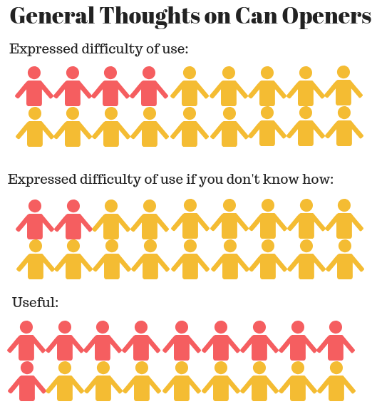
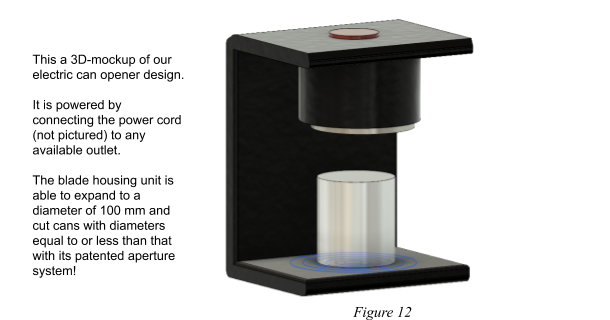
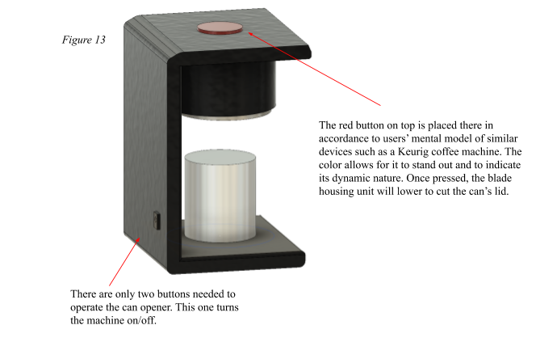
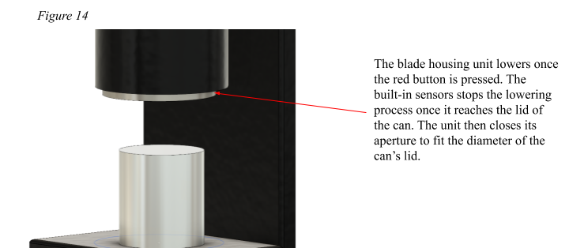
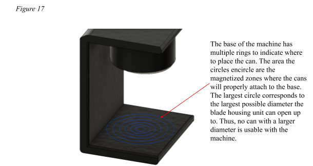
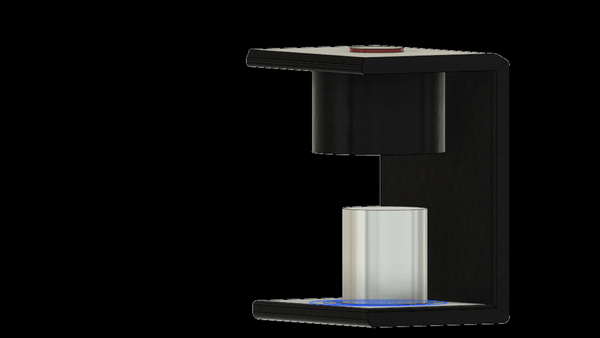

For a design project, I worked with other design students to redesign the can opener. We collected data through interviews, analyzed the data in order to identify problems with the can opener's design, and then we proposed a redesign.
1. What is your name, age and major?
2. What are your general thoughts on can openers?
3. Do you use can openers?
a) If yes, can you describe how you use one?
b) If no, why not?
5. Can you identify the different parts of this can opener?
6. Can you please open this can?
7. How was this process for you?
We asked interviewees about their general thoughts on can openers before and after using one in order to gain insight into the user's experience. We also asked interviewees to describe to us how to use a can opener to see if they can easily identify and understand the different mechanisms of the design of the can opener. We also filmed the users opening the can, in order to identify and keep track of the different type of mistakes that would occur while using the can opener.
Action-based slip. Experienced users will make a mistake while using the can opener. Users meant to perform an action that they knew was the proper action, but executed a different action instead.
Knowledge-based mistake. Inexperienced users would make a mistake because they have little to no prior knowledge or experience on how to use a can opener.
Only 4 out of 18 interviewees expressed that a can opener is difficult to use, but it was found that 9 out of 18 interviewees struggled to use it.
This means that regardless of a user's prior experience or knowledge of a can opener - the item's lack of signifiers and affordances makes its a bad design. These aspects led to a poor mental model for the users and poor user discoverability during use.
The can opener is difficult to turn. If the can opener is not clamped correctly, twisting the handle is often a difficult task.
Not knowing what angle the can opener should be in. There are no clear signifiers that tell the user what angle the can opener should be attached in order to clamp on correctly. This contributes the previous problem stated of how it is difficult to turn the handle when the can opener is not clamped on.
Lack of signifiers. The design includes a round blade and gear, where the blade afford cutting and the gear affords gripping onto the side of the can. The lack of signifiers results in users having issues figuring out how to position the can opener.

Interviewee struggling to turn the crank.

Interviewee using the wrong side of the can opener, causing the blade to cut into the sides and spill some of the liquid.

Interviewee having difficulty latching the can onto the can.
Our double diamond design process.
    Thank you to my groupmates Aaron Truong, Adrianna Hohil, Ariana Zormeier, Ilmaa Haque, and Vicky Ly for working on this project with me.
Made by Katherine Ngo